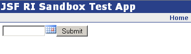
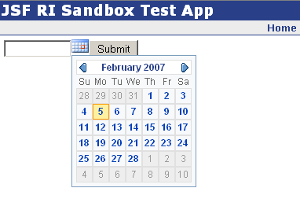

The calendar component is a wrapper for the Yahoo UI (yui) calendar component. Currently, the component's only mode of operation is as a single, pop up calendar. The plan for the component is to support both 2-up and "flat" (i.e., always showing) mode, as well as internationalization.
The usage for the component is quite simple: The component will then be rendered like this:
When the calendar icon is clicked, the pop-up calendar will be displayed:
